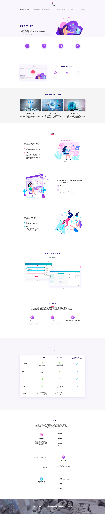
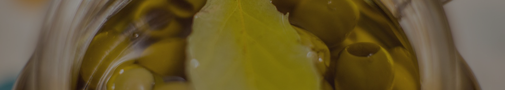
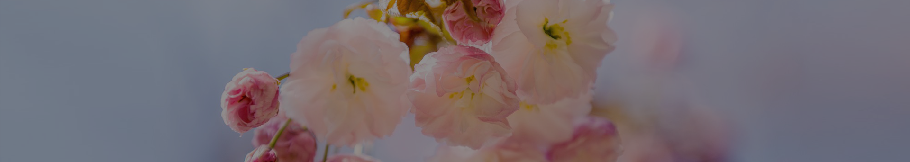

ESIGN
ESIGN


사내 업무 자동화 소개 페이지 프로젝트로 디지털 감성을 강조하기 위해 퍼플과 시안 컬러를
메인·서브로 활용 하였습니다. 아이콘은 그라데이션을 적용해 사이버틱한 분위기를 연출 하였고,
워드 프로스 기반의 사내 전용 페이지로 현재 운영되고 있습니다.
실제 서비스는 동적 웹 페이지며,
보안과 접근성 문제로 인해 포트폴리오에는 이미지 자료로
대체하여 작업물을 전달 드립니다.
내부 사용자에게 현대적이고 전문적인 디자인 경험을 제공하고
업무 효율화와 사용자 만족도를 높이는데에 주력한 프로젝트 입니다.



이 프로젝트는 전기 판매를 주제로 한 웹사이트 디자인 및 퍼블리싱 작업입니다. 저는 사이트 전체 디자인
제작에 참여하였으며, 퍼블리싱 작업은 약 60% 정도 참여해 시각적 완성도와 웹기능 구현의 균형을 맞추는 데
집중했습니다. 친환경의 이미지를 살리기 위해 초록빛을 메인 컬러로 사용했고, 주로 테이블 기반의 레이아웃으로 정보를 명확히 전달하는 데
중점을 두었습니다. 메뉴는 일부만 활성화 되어 있는데, 이는 기존에 확보한 리소스 범위내에서 핵심기능을 우선적으로 구현한 결과입니다.
로그인 버튼을 누르면 다음 화면을 보실 수 있습니다.


이 사이트는 사내 직원들이 자주 묻는 질문들을 한데 모아 손쉽게 답을 찾을 수 있도록 제작한 FaQ 플랫폼입니다. 이 프로젝트에서 주요 페이지 디자인을 메인으로 담당하였으며, 이후 서브 페이지의 디자인 작업은 팀 내 다른 디자이너분들이 맡아 진행하였습니다. 직관적인 UI와 시각적 균형에 집중하였으며, 청록색 그라데이션을 기반으로 심플하고 세련된 디자인으로 구성하되, 정보전달에 방해 되지 않으면서도 신뢰감을 줄 수 있도록 세심하게 작업하였습니다. 디자인 참여자로서 사용자들이 불편함 없이 자연스럽게 정보릅 탐색 할 수 있도록 노력하였으며, 최종적으로 사내 직원들의 업무 효율성을 높이는 데 기여한 프로젝트입니다. 디자인 부분만 참여 하였으며,진입시 뜨는 alert 확인 후 뜨는 화면 임의 부분을 클릭하면 다음 페이지를 볼 수 있게끔 연결 해 두었습니다. 총 5페이지 입니다.

KOREA-FTP는 국제민간항공기구 회원국을 대상으로 국토교통부가 운영하는 항공 분야 전문 교육훈련관리 담당 공식 포털입니다. 저는 이 프로젝트의 중간에 합류하여 약 40%의 퍼블리싱 업무를 담당하였고, 팀장으로서 팀원들의 업무를 이끌며 협업을 주도 하였습니다. 완성 된 기존 디자인과 UI를 기반으로 레이아웃을 안정적으로 구현하는데 집중하였습니다. 여러 브라우저 환경에서 동일한 품질을 유지하기 위한 크로스 브라우징 검증에 특히 신경을 썼으며, 팀원들과의 활발한 소통을 통해 작업효율을 높이고, 프로젝트 마감까지 일정과 품질을 관리하며 완성도를 높이는데에 기여하였습니다. 특히, 팀원들과의 협업을 통해 불필요한 중복작업을 줄이고 서로의 업무를 지원하며 전체 프로젝트 완성도를 높혀갔습니다. 디자인의 완성도를 최대한 웹에서 재현하고 웹 환경에 최적화하는 이번 프로젝트에서의 작업은 저에게 디자이너의 의도를 존중하며 , 사용자들이 편안하게 웹을 이용할 수 있도록 기술적 완성도와 문제해결 능력을 배우는데 큰 힘이 되었던 프로젝트였습니다.
이 사이트는 전력 시뮬레이터로, 사용자가 전기 판매 시 예상 금액을 손쉽게 조회할 수 있도록 설계되었습니다. 견적서 관리, 시뮬레이션 관리
기능과 함께 거점별 전력 데이터를 막대그래프와 표 형식으로 시각화하여 직관적인 분석이 가능하도록 구현되었으며, 채도가 낮은 파란색을
메인
컬러로 사용하여 지속적인 에너지 흐름과 안정된 전력환경을 직관적으로 전달 할 수 있도록 하였습니다. 사내 직원들이 효율적으로 정보를 열람하고
업무에 활용할 수 있도록 최적화된 환경을 제공하는데에 중점을 두고 제작 하였습니다.
인천국제공항 4단계 확장사업의 일환으로 추진된 통합정보시스템고도화 구축프로젝트에 참여해 약 10개월간 화면 퍼블리싱 업무를 수행하였습니다. 주요 화면들은 넥사크로로 진행하였습니다. 넥사크로는 처음 접해보는 환경이였지만, 다행히도 HTML/CSS에서 익힌 퍼블리싱 지식 덕분에 초반의 낯설음을 빠르게 극복할 수 있었습니다. 적응하는 과정에서 여러 시행착오도 있었지만, 팀원들과 소통하고 온라인 강의도 들으며 툴을 익혀나갔습니다. 상세화면 외의 FIA로그인화면, RC팝업 등 HTML/CSS/JS 를 써야하는 페이지들도 있었으므로 그 부분도 충실히 작업하였습니다. 초기 디자인에는 직접 관여하지 않았지만, 디자인 가이드 일부를 수정해야하는 일도 있었습니다. 가이드를 세심히 검토하고 수정하면서 UI 완성도를 높히는데에 도움이 되고자 노력했습니다. 보안상의 이유로 작업한 화면은 모두 모자이크 처리해야하는 점을 양해 부탁드립니다.


항공 MRO는 항공기 정비(Maintenance), 수리(Repair), 점검(Overhaul)을 의미하며, 항공기의 안전 운항을 위한 필수 과정입니다. 정비자재 관리, 기술 관리, 정비 수행 등 다양한 업무를 통합해 효율적으로 관리하는 시스템이 필요했습니다. 이 항공 MRO 사이트는 복잡한 정비 업무를 체계적으로 관리하고, 사용자들이 필요한 정보를 신속하게 조회하고 입력할 수 있도록 돕는 데 중점을 두었습니다. 특히, 다양한 정비 관련 데이터를 한눈에 확인할 수 있어야 했으므로 주로 table 기반의 레이아웃으로 정보를 명확히 전달하는 데 집중하였습니다. 또한, 사용자들이 편리하게 시스템을 이용할 수 있도록 직관적인 UI와 시각적 균형에 신경 써서 디자인 하였습니다. 항공 MRO 프로젝트는 figma에서 화면설계를 완성 한 후, 실제 구현은 리액트로 진행 되었습니다. 리액트 작업과정에서 각 컴포넌트의 css 스타일링 부분까지 팀원들과 도맡아 일관성 있는 UI가 구현 될 수 있도록 세심하게 신경썼습니다.
‘풀잎채’ 한식 뷔페 리뉴얼 사이트는 제가 8년 전 개인 포트폴리오를 위해 처음으로 도전한 의미 깊은 프로젝트입니다. 브랜드명 ‘풀잎채’의 신선하고 자연 친화적인 이미지를 잘 살리고자, 채도가 높은 연두색을 메인 컬러로 선정하여 싱그럽고 활기찬 분위기를 구현했습니다. 기존 배너들은 단순히 콘텐츠만 가져오는 데 그치지 않고, 사이트의 전체 톤앤매너에 어울리도록 모두 새롭게 디자인해 통일감과 전문성을 높였습니다. 당시 첫 개인 프로젝트였던 만큼 기술적으로 부족한 부분도 있었지만, 이 작업을 통해 디자인 감각과 웹 퍼블리싱 능력을 처음으로 체계적으로 다질 수 있었고 지금의 저를 있게 한 소중한 출발점이 되었습니다. 첫 프로젝트였던 만큼 많이 미숙하지만 제 성장의 첫 발판과 같았던 소중한 프로젝트입니다.

